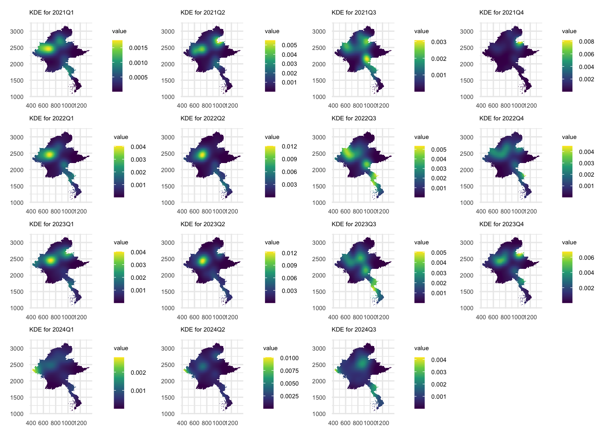
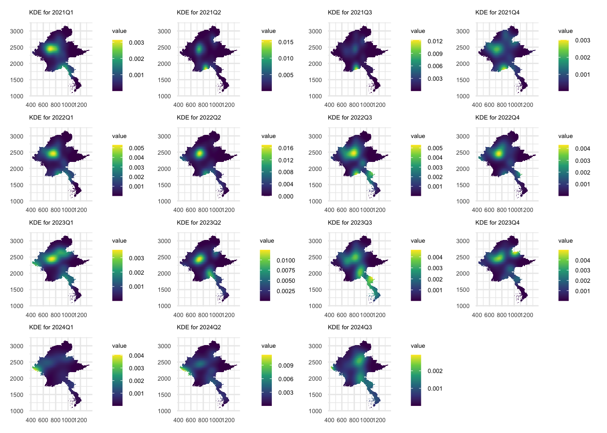
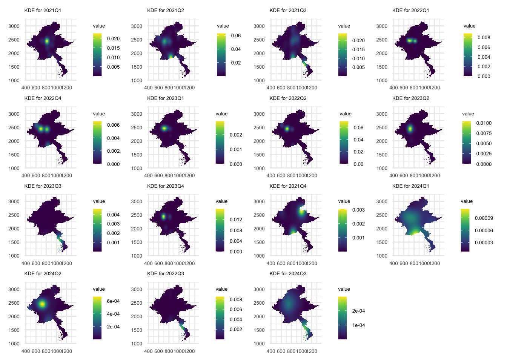
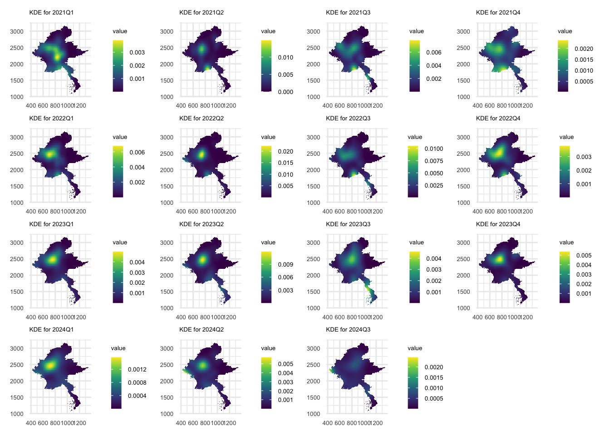
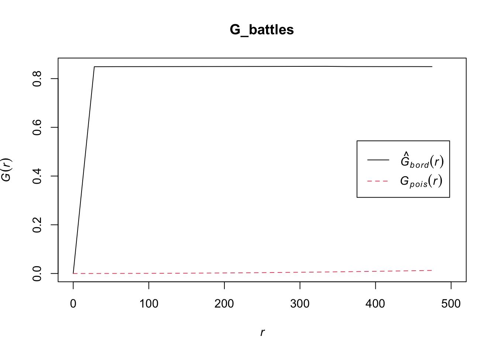
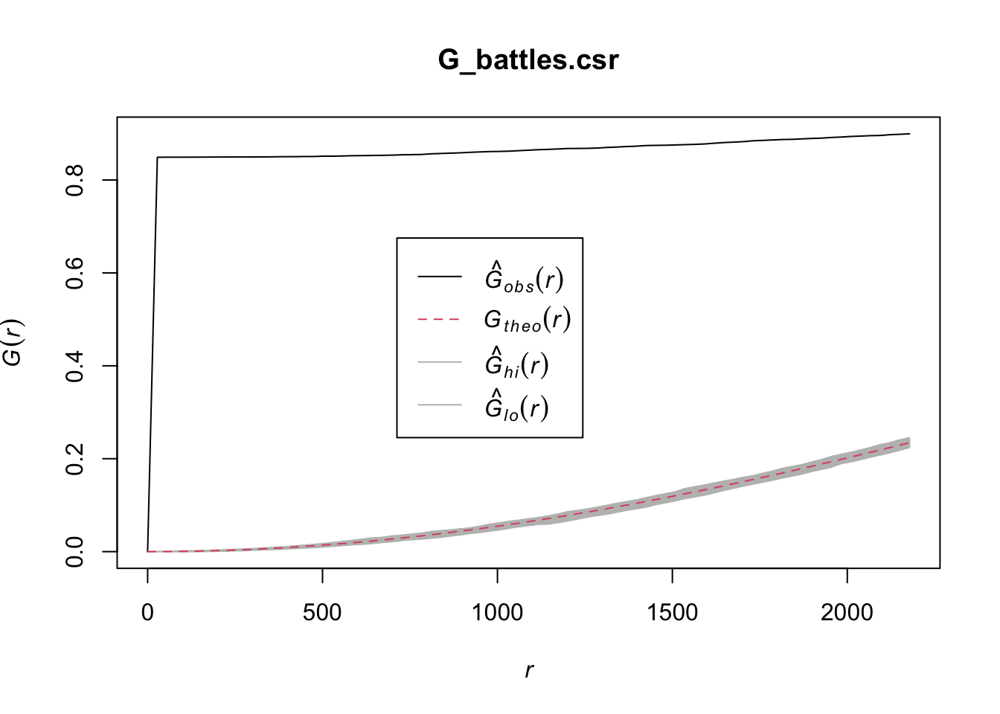
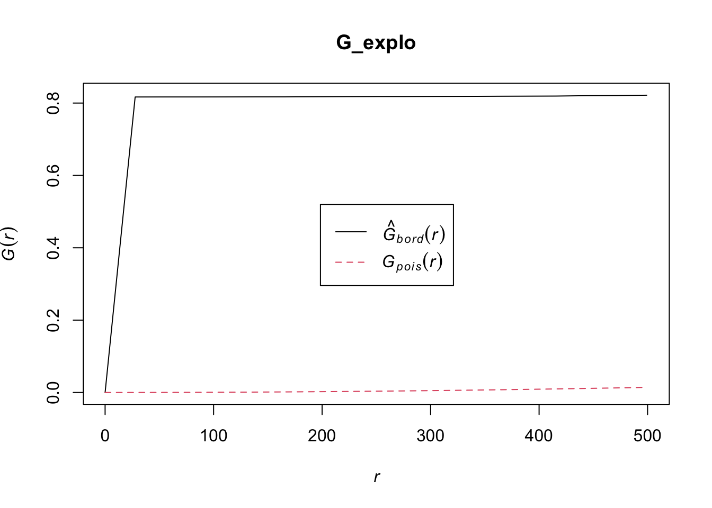
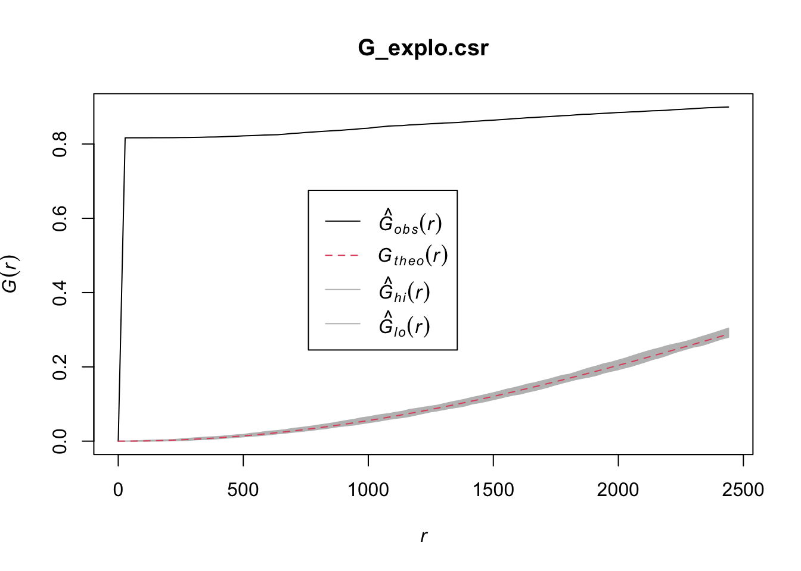

pacman:::p_load(sf,tidyverse,sparr,spatstat,raster,terra,janitor,skimr,lubridate,tmap,gridExtra,patchwork,gganimate) # more to be addedTake-Home Exercise 1: Application of Spatial and Spatio-temporal Point Patterns Analysis to discover the geographical distribution of Armed Conflict in Myanmar
Objectives of THE1
I will be using armed conflict data of Myanmar from January 2021 to June 2024, aka Armed Conflict Location & Event Data (ACLED).
I will be focusing on thsese main event types:
Battles,
Explosion/Remote violence,
Strategic developments, and
Violence against civilians.
Along the way, I will be exploring the use of different functions to obtain more aesthetically pleasing outputs for fun.
Data
Packages
These R packages will be used:
sf: importing, managing, and processing geospatial data, and
tidyverse: performing data science tasks such as importing, wrangling and visualising data.
readr
read_csv(): reading ACLED csv data
janitor: data cleaning
lubridate: date formatting
sparr : Spatio-temporal analysis
Extra (TBD):
janitor: data cleaning
lubridate: date formatting
skimr: provide summary statistics
raster:
raster()terra:
writeRaster()gridExtra, patchwork: +ggplot2 for ease of control of grid output layout
gganimate + gifski: animated STKDE output
ACLED
acled_sf <- read_csv('data/2021-01-01-2024-07-01-Myanmar.csv')Metadata
Click to expand –>
| Variable | Description |
|---|---|
| ‘event_id_cnty’ | unique alphanumeric ID by number & country acronym |
| ‘event_date’ | day-month-year of event |
| ‘year’ | self-explanatory |
| ‘time_precison’ | numeric code for level of precison of data records |
| ‘disorder_type’ | i.e. ‘Demonstrations’,‘Political violence’,‘Political violence; Demonstrations’,‘Strategic developments’ |
| ‘event_type’ | nature of event |
| ‘sub_event_type’ | provides further classification to event_type |
‘actor1’ ‘assoc_actor_1’ ‘actor2’ ‘assoc_actor_2’ |
involved actors along with their respective affiliates |
‘inter1’ ‘inter2’ |
numeric code between 0 and 8 encoding different actors |
| ‘interaction’ | indicates the 2 actor types interacting in the event (encoded inter1 & inter2 by concatenation) |
| ‘civilian_targeting’ | indicates whether the event involved civilian targeting (e.g. null if false)
|
| ‘iso’ | unique 3-digit numeric code assigned to each country or territory according to ISO 3166 |
| ‘region’ | region of the world where the event took place |
| ‘country’ | self-explanatory |
‘admin1’ ‘admin2’ ‘admin3’ |
national administrative regions where the event took place (admin1 being the largest) |
| ‘location’ | self-explanatory |
| ‘latitude’ | self-explanatory |
| ‘longitude’ | self-explanatory |
| ‘geo_precision’ | numeric code for level of precison of event location |
| ‘source’ | source of event report |
| ‘source_scale’ | scale (e.g. local, international) of the source |
| ‘notes’ | description of the event |
| ‘fatalities’ | number of reported fatalities in the event |
| ‘tags’ | targets (type and estimate counts) |
| ‘time’ | Unix Timestamp of event |
Myammar’s Administrative Boundary data
Background:
admin 0: country boundary (full overview)
1: state/region
2: district-level
3: township (greatest resolution)
Approach:
In the working file directory, group the shapefiles according to admin classification (admin0, admin1, etc.)
Load
Check structure and boundary plot
For the purposes of exploring the differences in detail:
the1_mymr_shp4326_admin0 <- st_read(dsn = 'data/gadm41_MMR_0/', layer = 'gadm41_MMR_0')str(the1_mymr_shp4326_admin0)
# geometry: "XY" "MULTIPOLYGON"plot(the1_mymr_shp4326_admin0$geometry)the1_mymr_shp4326_admin1 <- st_read(dsn = 'data/gadm41_MMR_1/', layer = 'gadm41_MMR_1')Reading layer `gadm41_MMR_1' from data source
`/Users/williamtjw/is415-gaa-williamtjw/resources/Take-home_Ex/ex1/data/gadm41_MMR_1'
using driver `ESRI Shapefile'
Simple feature collection with 15 features and 11 fields
Geometry type: MULTIPOLYGON
Dimension: XY
Bounding box: xmin: 92.1725 ymin: 8.824445 xmax: 101.1768 ymax: 28.54326
Geodetic CRS: WGS 84str(the1_mymr_shp4326_admin1)plot(the1_mymr_shp4326_admin1$geometry)the1_mymr_shp4326_admin2 <- st_read(dsn = 'data/gadm41_MMR_2/', layer = 'gadm41_MMR_2')str(the1_mymr_shp4326_admin2)plot(the1_mymr_shp4326_admin2$geometry)the1_mymr_shp4326_admin3 <- st_read(dsn = 'data/gadm41_MMR_3/', layer = 'gadm41_MMR_3')str(the1_mymr_shp4326_admin3)plot(the1_mymr_shp4326_admin3$geometry)Study Area
To balance spatial detail and computational efficiency, I think using the1_mymr_shp4326_admin1 (state/region) boundary data will be the best fit. While looking at district-/township-level provides fine granularity for analysis, for potato machines like my macbook, the1_mymr_shp4326_admin1 provides the best compromise.
summary(the1_mymr_shp4326_admin1)Data Wrangling
In this section, I will be doing basic data cleaning and formatting across the ACLED columns so that I can derive appropriate variables needed for analysis.
Inspecting ACLED
head(acled_sf, n=5)Check ACLED structure
str(acled_sf)Check event_type values
unique(acled_sf$event_type)Check for Missing Data
sum(is.na(acled_sf))Clearly, this doesn’t provide much insight to the state of the ACLED columns. Hence I consulted Uncle Google for alternatives:
- base R
acled_sf %>%
summarise(across(everything(), ~ sum(is.na(.)))) %>%
# pivot_longer() to transpose the table for a more compact output
pivot_longer(everything(), names_to = "column", values_to = "missing_count") %>%
# filter() to rid off ACLED columns with no missing data.
filter(missing_count > 0)Notes from output:
‘
actor’-related columns: possible to have 1 or more actors responsible‘
civilian_targeting’: boolean-like variable — null for no civilian targeting‘
admin3’: location identifiers are still discernible at least 1 of theadmincolumns are filled‘
tags’: supplementary target description informationHence,
missing_countvalues can be ignored.
skim()fromskimrpackage
skim(acled_sf) %>%
tibble::as_tibble()
# n_missing, character.n_unique, various summary statistics are somwhat useful; added here for extra referenceChecking for duplicates in ACLED’s unique identifier event_id_cnty
- base R
sum(duplicated(acled_sf['event_id_cnty'])) # no duplicatesWrangling
Reference system
st_crs(acled_sf)acled_sf <- acled_sf %>%
st_as_sf(coords = c('longitude','latitude'), crs = 4326) %>%
st_transform(crs = 32646)
st_crs(acled_sf) # last line: ID["EPSG",32646]]st_crs(the1_mymr_shp4326_admin1) # last line: ID["EPSG",4326]]the1_mymr_shp32646_admin1 <- the1_mymr_shp4326_admin1 %>%
st_transform(crs = 32646)
st_crs(the1_mymr_shp32646_admin1) # now should be: ID["EPSG",32646]]Coordinate Reference System:
User input: EPSG:32646
wkt:
PROJCRS["WGS 84 / UTM zone 46N",
BASEGEOGCRS["WGS 84",
ENSEMBLE["World Geodetic System 1984 ensemble",
MEMBER["World Geodetic System 1984 (Transit)"],
MEMBER["World Geodetic System 1984 (G730)"],
MEMBER["World Geodetic System 1984 (G873)"],
MEMBER["World Geodetic System 1984 (G1150)"],
MEMBER["World Geodetic System 1984 (G1674)"],
MEMBER["World Geodetic System 1984 (G1762)"],
MEMBER["World Geodetic System 1984 (G2139)"],
ELLIPSOID["WGS 84",6378137,298.257223563,
LENGTHUNIT["metre",1]],
ENSEMBLEACCURACY[2.0]],
PRIMEM["Greenwich",0,
ANGLEUNIT["degree",0.0174532925199433]],
ID["EPSG",4326]],
CONVERSION["UTM zone 46N",
METHOD["Transverse Mercator",
ID["EPSG",9807]],
PARAMETER["Latitude of natural origin",0,
ANGLEUNIT["degree",0.0174532925199433],
ID["EPSG",8801]],
PARAMETER["Longitude of natural origin",93,
ANGLEUNIT["degree",0.0174532925199433],
ID["EPSG",8802]],
PARAMETER["Scale factor at natural origin",0.9996,
SCALEUNIT["unity",1],
ID["EPSG",8805]],
PARAMETER["False easting",500000,
LENGTHUNIT["metre",1],
ID["EPSG",8806]],
PARAMETER["False northing",0,
LENGTHUNIT["metre",1],
ID["EPSG",8807]]],
CS[Cartesian,2],
AXIS["(E)",east,
ORDER[1],
LENGTHUNIT["metre",1]],
AXIS["(N)",north,
ORDER[2],
LENGTHUNIT["metre",1]],
USAGE[
SCOPE["Engineering survey, topographic mapping."],
AREA["Between 90°E and 96°E, northern hemisphere between equator and 84°N, onshore and offshore. Bangladesh. Bhutan. China. Indonesia. Mongolia. Myanmar (Burma). Russian Federation."],
BBOX[0,90,84,96]],
ID["EPSG",32646]]Date format
lubridatepackageas_datetime(): converts UNIX time-stamps into workable date-time objectquarter(): extracts quarter info
# to-do: assign variable; mix in geospatial data too
acled_sf_prepped <- acled_sf %>%
group_by(event_id_cnty) %>%
arrange(timestamp) %>%
mutate(
# convert UNIX timestamp into datetime object
datetime = as_datetime(timestamp, tz = 'Asia/Yangon'),
# extract quarter info
quarter_num = quarter(datetime),
# concatenate
quarter_period = paste(year,'Q', quarter_num, sep = '')
) %>%
ungroup()Note: Unix timestamps count the number of seconds since the Unix epoch (January 1st, 1970 at UTC)
Saving Derived Data
Save working data files and check data structures and attributes if needed before proceeding with analysis
acled_sf_prepped# | eval: false
the1_mymr_shp32646_admin1Simple feature collection with 15 features and 11 fields
Geometry type: MULTIPOLYGON
Dimension: XY
Bounding box: xmin: 414101 ymin: 978844.6 xmax: 1348458 ymax: 3165949
Projected CRS: WGS 84 / UTM zone 46N
First 10 features:
GID_1 GID_0 COUNTRY NAME_1 VARNAME_1 NL_NAME_1
1 MMR.1_1 MMR Myanmar Ayeyarwady Irrawaddy|Ayeyarwaddy|Ayeyawady| NA
2 MMR.2_1 MMR Myanmar Bago Pégou|Pegu NA
3 MMR.3_1 MMR Myanmar Chin Chin Hills NA
4 MMR.4_1 MMR Myanmar Kachin Jingphaw Mungdaw NA
5 MMR.5_1 MMR Myanmar Kayah Karenni NA
6 MMR.6_1 MMR Myanmar Kayin Kawthulei|Karen|Karin|Kawthoolei NA
7 MMR.7_1 MMR Myanmar Magway Magwe|Minbu NA
8 MMR.8_1 MMR Myanmar Mandalay NA NA
9 MMR.9_1 MMR Myanmar Mon Mun NA
10 MMR.10_1 MMR Myanmar Naypyitaw Naypyidaw|Nay Pyi Taw NA
TYPE_1 ENGTYPE_1 CC_1 HASC_1 ISO_1
1 Yin Division NA MM.AY MM-07
2 Yin Division NA MM.BA MM-02
3 Pyine State NA MM.CH NA
4 Pyine State NA MM.KC MM-11
5 Pyine State NA MM.KH MM-12
6 Pyine State NA MM.KN MM-13
7 Yin Division NA MM.MG MM-03
8 Yin Division NA MM.MD MM-04
9 Pyine State NA MM.MO MM-15
10 Union territory Union territory NA MM.NY NA
geometry
1 MULTIPOLYGON (((676171.4 17...
2 MULTIPOLYGON (((916141.6 18...
3 MULTIPOLYGON (((465603.4 23...
4 MULTIPOLYGON (((903011.7 26...
5 MULTIPOLYGON (((959987.5 20...
6 MULTIPOLYGON (((1097974 178...
7 MULTIPOLYGON (((793981.3 21...
8 MULTIPOLYGON (((854656.9 21...
9 MULTIPOLYGON (((1015173 165...
10 MULTIPOLYGON (((829548.3 21...# refer to previously,
# "Strategic developments"
# "Explosions/Remote violence"
# "Battles"
# "Protests"
# "Violence against civilians"
# "Riots"
acled_stratdev_sf <- acled_sf_prepped %>%
filter(event_type=='Strategic developments') %>%
dplyr::select(1,33,30,3,32)
# if i did not specify dplyr unknown error pops: Error: unable to find an inherited method for function ‘select’ for signature ‘x = "sf"’
acled_explo_sf <- acled_sf_prepped %>%
filter(event_type=='Explosions/Remote violence') %>%
dplyr::select(1,33,30,3,32)
acled_battle_sf <- acled_sf_prepped %>%
filter(event_type=='Battles') %>%
dplyr::select(1,33,30,3,32)
acled_protest_sf <- acled_sf_prepped %>%
filter(event_type=='Protests') %>%
dplyr::select(1,33,30,3,32)
acled_civi_sf <- acled_sf_prepped %>%
filter(event_type=='Violence against civilians') %>%
dplyr::select(1,33,30,3,32)
acled_riot_sf <- acled_sf_prepped %>%
filter(event_type=='Riots') %>%
dplyr::select(1,33,30,3,32)
write_rds(acled_stratdev_sf, 'data/rds/acled_stratdev_sf.rds')
write_rds(acled_explo_sf, 'data/rds/acled_explo_sf.rds')
write_rds(acled_battle_sf, 'data/rds/acled_battle_sf.rds')
write_rds(acled_protest_sf, 'data/rds/acled_protest_sf.rds')
write_rds(acled_civi_sf, 'data/rds/acled_civi_sf.rds')
write_rds(acled_riot_sf, 'data/rds/acled_riot_sf.rds')
write_rds(acled_sf_prepped, 'data/rds/acled_sf_prepped.rds')
write_rds(the1_mymr_shp32646_admin1, 'data/rds/the1_mymr_shp32646_admin1.rds')
# event_id_cnty,1
# quarter_period,33
# geometry,30RDS Checkpoint: event_types sf
acled_sf_prepped <- read_rds('data/rds/acled_sf_prepped.rds')
the1_mymr_shp32646_admin1 <- read_rds('data/rds/the1_mymr_shp32646_admin1.rds')
acled_stratdev_sf <- read_rds('data/rds/acled_stratdev_sf.rds')
acled_explo_sf <- read_rds('data/rds/acled_explo_sf.rds')
acled_battle_sf <- read_rds('data/rds/acled_battle_sf.rds')
acled_protest_sf <- read_rds('data/rds/acled_protest_sf.rds')
acled_civi_sf <- read_rds('data/rds/acled_civi_sf.rds')
acled_riot_sf <- read_rds('data/rds/acled_riot_sf.rds')Basemap Visualisation by event_type
Overview plots by event_type
Compute
# remove(p,plot,plot_list,events,event_type, event_type_list)
plot_list <- list()
event_type_list <- list(
acled_battle_sf,
acled_explo_sf,
acled_protest_sf,
acled_riot_sf,
acled_stratdev_sf,
acled_civi_sf
)
event = sort(unique(acled_sf_prepped$event_type))
for (i in seq_along(event_type_list)) {
event_type <- event_type_list[[i]]
plot <- tm_shape(the1_mymr_shp32646_admin1) +
tm_polygons() +
tm_shape(event_type) +
tm_dots(size = 0.005) +
tm_layout(title = toString(event[i]))
plot_list[[i]] <- plot
}Note: Append the plots to a separate list, otherwise tmap plot will not work (due to how tmap output works)
Save
write_rds(plot_list,'data/rds/event_overview_plot_list.rds')Visualise
event_overview_plot_list <- read_rds('data/rds/event_overview_plot_list.rds')
tmap_arrange(event_overview_plot_list, ncol = 6)Quarterly plots
Compute Quarterly plots
# Extract unique quarters from the data
qtrs <- unique(acled_battle_sf$quarter_period)
# Create an empty list to store plots
plot_battle_list <- list()
# Loop through each unique quarter and generate plots
for (i in seq_along(qtrs)) {
qtr <- qtrs[i]
# Filter data for the current quarter
qtr_data <- acled_battle_sf %>% filter(quarter_period==qtr)
# Create plot for the current quarter
plot <- tm_shape(the1_mymr_shp32646_admin1) +
tm_polygons() +
tm_shape(qtr_data) +
tm_dots(size = 0.005) +
tm_layout(title = toString(qtr))
# Store the plot in the list
plot_battle_list[[i]] <- plot
}# Extract unique quarters from the data
qtrs <- unique(acled_explo_sf$quarter_period)
# Create an empty list to store plots
plot_explo_list <- list()
# Loop through each unique quarter and generate plots
for (i in seq_along(qtrs)) {
qtr <- qtrs[i]
# Filter data for the current quarter
qtr_data <- acled_explo_sf %>% filter(quarter_period==qtr)
# Create plot for the current quarter
plot <- tm_shape(the1_mymr_shp32646_admin1) +
tm_polygons() +
tm_shape(qtr_data) +
tm_dots(size = 0.005) +
tm_layout(title = toString(qtr))
# Store the plot in the list
plot_explo_list[[i]] <- plot
}# Extract unique quarters from the data
qtrs <- unique(acled_protest_sf$quarter_period)
# Create an empty list to store plots
plot_protest_list <- list()
# Loop through each unique quarter and generate plots
for (i in seq_along(qtrs)) {
qtr <- qtrs[i]
# Filter data for the current quarter
qtr_data <- acled_protest_sf %>% filter(quarter_period==qtr)
# Create plot for the current quarter
plot <- tm_shape(the1_mymr_shp32646_admin1) +
tm_polygons() +
tm_shape(qtr_data) +
tm_dots(size = 0.005) +
tm_layout(title = toString(qtr))
# Store the plot in the list
plot_protest_list[[i]] <- plot
}# Extract unique quarters from the data
qtrs <- unique(acled_riot_sf$quarter_period)
# Create an empty list to store plots
plot_riot_list <- list()
# Loop through each unique quarter and generate plots
for (i in seq_along(qtrs)) {
qtr <- qtrs[i]
# Filter data for the current quarter
qtr_data <- acled_riot_sf %>% filter(quarter_period==qtr)
# Create plot for the current quarter
plot <- tm_shape(the1_mymr_shp32646_admin1) +
tm_polygons() +
tm_shape(qtr_data) +
tm_dots(size = 0.005) +
tm_layout(title = toString(qtr))
# Store the plot in the list
plot_riot_list[[i]] <- plot
}# Extract unique quarters from the data
qtrs <- unique(acled_stratdev_sf$quarter_period)
# Create an empty list to store plots
plot_stratdev_list <- list()
# Loop through each unique quarter and generate plots
for (i in seq_along(qtrs)) {
qtr <- qtrs[i]
# Filter data for the current quarter
qtr_data <- acled_stratdev_sf %>% filter(quarter_period==qtr)
# Create plot for the current quarter
plot <- tm_shape(the1_mymr_shp32646_admin1) +
tm_polygons() +
tm_shape(qtr_data) +
tm_dots(size = 0.005) +
tm_layout(title = toString(qtr))
# Store the plot in the list
plot_stratdev_list[[i]] <- plot
}# Extract unique quarters from the data
qtrs <- unique(acled_civi_sf$quarter_period)
# Create an empty list to store plots
plot_civi_list <- list()
# Loop through each unique quarter and generate plots
for (i in seq_along(qtrs)) {
qtr <- qtrs[i]
# Filter data for the current quarter
qtr_data <- acled_civi_sf %>% filter(quarter_period==qtr)
# Create plot for the current quarter
plot <- tm_shape(the1_mymr_shp32646_admin1) +
tm_polygons() +
tm_shape(qtr_data) +
tm_dots(size = 0.005) +
tm_layout(title = toString(qtr))
# Store the plot in the list
plot_civi_list[[i]] <- plot
}Save as RDS
write_rds(plot_battle_list, 'data/rds/plot_battle_list.rds')
write_rds(plot_explo_list, 'data/rds/plot_explo_list.rds')
write_rds(plot_protest_list, 'data/rds/plot_protest_list.rds')
write_rds(plot_riot_list, 'data/rds/plot_riot_list.rds')
write_rds(plot_stratdev_list, 'data/rds/plot_stratdev_list.rds')
write_rds(plot_civi_list, 'data/rds/plot_civi_list.rds')plot_battle_list <- read_rds('data/rds/plot_battle_list.rds')
plot_explo_list <- read_rds('data/rds/plot_explo_list.rds')
plot_protest_list <- read_rds('data/rds/plot_protest_list.rds')
plot_riot_list <- read_rds('data/rds/plot_riot_list.rds')
plot_stratdev_list <- read_rds('data/rds/plot_stratdev_list.rds')
plot_civi_list <- read_rds('data/rds/plot_civi_list.rds')Visualise
## | eval: false
tmap_arrange(plot_battle_list, ncol = 4)
##| eval: false
tmap_arrange(plot_explo_list, ncol = 4)##| eval: false
tmap_arrange(plot_protest_list, ncol = 4)##| eval: false
tmap_arrange(plot_riot_list, ncol = 4)
##| eval: false
tmap_arrange(plot_stratdev_list, ncol = 4)##| eval: false
tmap_arrange(plot_civi_list, ncol = 4)First-order Spatial Point Patterns Analysis (SPPA)
1st order SPPA deals with the variation of intensity (density) of points in a study area. In this context, I will be visualising the variation in the density of each event_type instances across the admin 1 (state/region) boundaries.
Overview KDEs
Creating ppp object
as.ppp() from spatstat.geom
acled_ppp <- as.ppp(acled_sf_prepped)Warning in as.ppp.sf(acled_sf_prepped): only first attribute column is used for
markssummary(acled_ppp)Marked planar point pattern: 51576 points
Average intensity 3.122579e-08 points per square unit
Coordinates are given to 10 decimal places
marks are of type 'character'
Summary:
Length Class Mode
51576 character character
Window: rectangle = [415262.5, 1265315.1] x [1108593.6, 3051663.8] units
(850100 x 1943000 units)
Window area = 1.65171e+12 square unitsCreating owin object of admin1 boundary
the1_mymr_shp4326_admin1_owin <- as.owin(the1_mymr_shp32646_admin1)Combine ppp and owin
acled_ppp <- acled_ppp[the1_mymr_shp4326_admin1_owin]Rescale m to km
acled_ppp_km <- rescale.ppp(acled_ppp,1000,'km')Varying admin1 geographical boundaries — ideal adaptive bandwidth KDE, but because of computational limitation, fixed BW is used:
Compute KDEs
kde_acled_bw_diggle <- density(
acled_ppp_km,
sigma=bw.diggle,
edge=TRUE,
kernel='gaussian'
)kde_acled_bw_scott <- density(
acled_ppp_km,
sigma=bw.scott,
edge=TRUE,
kernel='gaussian'
)kde_acled_bw_ppl <- density(
acled_ppp_km,
sigma=bw.ppl,
edge=TRUE,
kernel='gaussian'
)kde_acled_bw_cvl <- density(
acled_ppp_km,
sigma=bw.CvL,
edge=TRUE,
kernel='gaussian'
) # choosing thispar(mfrow=c(1,4))
plot(kde_acled_bw_cvl)
plot(kde_acled_bw_diggle)
plot(kde_acled_bw_ppl)
plot(kde_acled_bw_scott)
Only
kde_acled_bw_cvlandkde_acled_bw_scottproduced discernible plots with notable differences:
kde_acled_bw_cvl: smoother — provides a cleaner overall trend without excessive noise
kde_acled_bw_scott: greater detail — capture small variations or nuances in the dataSmoother plots might help with observing overall trends across quarterly
event_typedata, hence I will opt to usebw_scott
Quarterly KDE layers (excluding Riots)
Compute
# initialise
quarters <- unique(acled_battle_sf$quarter_period)
kde_battles_list <- list()
ppp_battles_list <- list()
# test
# acled_battle_sf %>% filter(quarter_period=='2021Q1')
for (quarter in quarters) {
# filter quarter
acled_battle_sf_qtr <- acled_battle_sf %>% filter(quarter_period == quarter)
# create ppp object
acled_battle_ppp_qtr <- as.ppp(acled_battle_sf_qtr)
# create owin object
acled_battle_ppp_qtr <- acled_battle_ppp_qtr[the1_mymr_shp4326_admin1_owin]
# rescale to KM
acled_battle_ppp_km_qtr <- rescale.ppp(acled_battle_ppp_qtr,1000,'km')
# Append ppp object to list
ppp_battles_list[[quarter]] <- acled_battle_ppp_km_qtr
# compute KDE
kde_acled_battle_qtr_bw_cvl <- density(
acled_battle_ppp_km_qtr,
sigma=bw.CvL,
edge=TRUE,
kernel='gaussian'
)
# Append to list
kde_battles_list[[quarter]] <- kde_acled_battle_qtr_bw_cvl
print('qtr done!')
}# initialise
quarters <- unique(acled_explo_sf$quarter_period)
kde_explo_list <- list()
ppp_explo_list <- list()
# test
# acled_battle_sf %>% filter(quarter_period=='2021Q1')
for (quarter in quarters) {
# filter quarter
acled_explo_sf_qtr <- acled_explo_sf %>% filter(quarter_period == quarter)
# create ppp object
acled_explo_ppp_qtr <- as.ppp(acled_explo_sf_qtr)
# create owin object
acled_explo_ppp_qtr <- acled_explo_ppp_qtr[the1_mymr_shp4326_admin1_owin]
# rescale to KM
acled_explo_ppp_km_qtr <- rescale.ppp(acled_explo_ppp_qtr,1000,'km')
# Append ppp object to list
ppp_explo_list[[quarter]] <- acled_battle_ppp_km_qtr
# compute KDE
kde_acled_explo_qtr_bw_cvl <- density(
acled_explo_ppp_km_qtr,
sigma=bw.CvL,
edge=TRUE,
kernel='gaussian'
)
# Append to list
kde_explo_list[[quarter]] <- kde_acled_explo_qtr_bw_cvl
print('qtr done!')
}# initialise
quarters <- unique(acled_protest_sf$quarter_period)
kde_protest_list <- list()
ppp_protest_list <- list()
# test
# acled_battle_sf %>% filter(quarter_period=='2021Q1')
for (quarter in quarters) {
# filter quarter
acled_protest_sf_qtr <- acled_protest_sf %>% filter(quarter_period == quarter)
# create ppp object
acled_protest_ppp_qtr <- as.ppp(acled_protest_sf_qtr)
# create owin object
acled_protest_ppp_qtr <- acled_protest_ppp_qtr[the1_mymr_shp4326_admin1_owin]
# rescale to KM
acled_protest_ppp_km_qtr <- rescale.ppp(acled_protest_ppp_qtr,1000,'km')
# Append ppp object to list
ppp_protest_list[[quarter]] <- acled_battle_ppp_km_qtr
# compute KDE
kde_acled_protest_qtr_bw_cvl <- density(
acled_protest_ppp_km_qtr,
sigma=bw.CvL,
edge=TRUE,
kernel='gaussian'
)
# Append to list
kde_protest_list[[quarter]] <- kde_acled_protest_qtr_bw_cvl
print('qtr done!')
}# initialise
quarters <- unique(acled_stratdev_sf$quarter_period)
kde_stratdev_list <- list()
ppp_stratdev_list <- list()
# test
# acled_battle_sf %>% filter(quarter_period=='2021Q1')
for (quarter in quarters) {
# filter quarter
acled_stratdev_sf_qtr <- acled_stratdev_sf %>% filter(quarter_period == quarter)
# create ppp object
acled_stratdev_ppp_qtr <- as.ppp(acled_stratdev_sf_qtr)
# create owin object
acled_stratdev_ppp_qtr <- acled_stratdev_ppp_qtr[the1_mymr_shp4326_admin1_owin]
# rescale to KM
acled_stratdev_ppp_km_qtr <- rescale.ppp(acled_stratdev_ppp_qtr,1000,'km')
# Append ppp object to list
ppp_protest_list[[quarter]] <- acled_battle_ppp_km_qtr
# compute KDE
kde_acled_stratdev_qtr_bw_cvl <- density(
acled_stratdev_ppp_km_qtr,
sigma=bw.CvL,
edge=TRUE,
kernel='gaussian'
)
# Append to list
kde_stratdev_list[[quarter]] <- kde_acled_stratdev_qtr_bw_cvl
print('qtr done!')
}# initialise
quarters <- unique(acled_civi_sf$quarter_period)
kde_civi_list <- list()
ppp_civi_list <- list()
# test
# acled_battle_sf %>% filter(quarter_period=='2021Q1')
for (quarter in quarters) {
# filter quarter
acled_civi_sf_qtr <- acled_civi_sf %>% filter(quarter_period == quarter)
# create ppp object
acled_civi_ppp_qtr <- as.ppp(acled_civi_sf_qtr)
# create owin object
acled_civi_ppp_qtr <- acled_civi_ppp_qtr[the1_mymr_shp4326_admin1_owin]
# rescale to KM
acled_civi_ppp_km_qtr <- rescale.ppp(acled_civi_ppp_qtr,1000,'km')
# Append ppp object to list
ppp_protest_list[[quarter]] <- acled_battle_ppp_km_qtr
# compute KDE
kde_acled_civi_qtr_bw_cvl <- density(
acled_civi_ppp_km_qtr,
sigma=bw.CvL,
edge=TRUE,
kernel='gaussian'
)
# Append to list
kde_civi_list[[quarter]] <- kde_acled_civi_qtr_bw_cvl
print('qtr done!')
}Save as RDS
write_rds(kde_battles_list, 'data/rds/kde_battles_list.rds')
write_rds(kde_explo_list, 'data/rds/kde_explo_list.rds')
write_rds(kde_protest_list, 'data/rds/kde_protest_list.rds')
write_rds(kde_stratdev_list, 'data/rds/kde_stratdev_list.rds')
write_rds(kde_civi_list, 'data/rds/kde_civi_list.rds')write_rds(ppp_battles_list, 'data/rds/ppp_battles_list.rds')
write_rds(ppp_explo_list, 'data/rds/ppp_explo_list.rds')
write_rds(ppp_protest_list, 'data/rds/ppp_protest_list.rds')
write_rds(ppp_stratdev_list, 'data/rds/ppp_stratdev_list.rds')
write_rds(ppp_civi_list, 'data/rds/ppp_civi_list.rds')ppp_battles_list <- read_rds('data/rds/kde_battles_list.rds')
ppp_explo_list <- read_rds('data/rds/kde_explo_list.rds')
ppp_protest_list <- read_rds('data/rds/kde_protest_list.rds')
ppp_stratdev_list <- read_rds('data/rds/kde_stratdev_list.rds')
ppp_civi_list <- read_rds('data/rds/kde_civi_list.rds')kde_battles_list <- read_rds('data/rds/kde_battles_list.rds')
kde_explo_list <- read_rds('data/rds/kde_explo_list.rds')
kde_protest_list <- read_rds('data/rds/kde_protest_list.rds')
kde_stratdev_list <- read_rds('data/rds/kde_stratdev_list.rds')
kde_civi_list <- read_rds('data/rds/kde_civi_list.rds')Visualise
# Create a list to store ggplot objects
kde_plots <- list()
# Loop through each KDE and create a ggplot object
for (quarter in names(kde_battles_list)) {
kde_df <- as.data.frame(kde_battles_list[[quarter]]) # Convert KDE raster to data frame
# Create a plot
p <- ggplot() +
geom_raster(aes(x, y, fill = value), data = kde_df) +
scale_fill_viridis_c() +
ggtitle(paste("KDE for", quarter)) +
# Reduce the size of titles, legends, and axis text
theme_minimal() +
theme(
plot.title = element_text(size = 5), # Reduce title size
axis.title = element_blank(), # Remove axis titles
axis.text = element_text(size = 5), # Minimize axis text size
legend.title = element_text(size = 5), # Reduce legend title size
legend.text = element_text(size = 5), # Reduce legend text size
legend.key.size = unit(0.3, "cm"), # Minimize legend key size
plot.margin = margin(1, 1, 1, 1, "mm") # Minimize margins around the plot
)
kde_plots[[quarter]] <- p
}
# Combine plots into a grid with 4 columns
combined_plot <- wrap_plots(kde_plots) + plot_layout(ncol = 4)
# Display the combined plot
combined_plot# Create a list to store ggplot objects
kde_plots <- list()
# Loop through each KDE and create a ggplot object
for (quarter in names(kde_explo_list)) {
kde_df <- as.data.frame(kde_explo_list[[quarter]]) # Convert KDE raster to data frame
# Create a plot
p <- ggplot() +
geom_raster(aes(x, y, fill = value), data = kde_df) +
scale_fill_viridis_c() +
ggtitle(paste("KDE for", quarter)) +
# Reduce the size of titles, legends, and axis text
theme_minimal() +
theme(
plot.title = element_text(size = 5), # Reduce title size
axis.title = element_blank(), # Remove axis titles
axis.text = element_text(size = 5), # Minimize axis text size
legend.title = element_text(size = 5), # Reduce legend title size
legend.text = element_text(size = 5), # Reduce legend text size
legend.key.size = unit(0.3, "cm"), # Minimize legend key size
plot.margin = margin(1, 1, 1, 1, "mm") # Minimize margins around the plot
)
kde_plots[[quarter]] <- p
}
# Combine plots into a grid with 4 columns
combined_plot <- wrap_plots(kde_plots) + plot_layout(ncol = 4)
# Display the combined plot
combined_plot
# Create a list to store ggplot objects
kde_plots <- list()
# Loop through each KDE and create a ggplot object
for (quarter in names(kde_protest_list)) {
kde_df <- as.data.frame(kde_protest_list[[quarter]]) # Convert KDE raster to data frame
# Create a plot
p <- ggplot() +
geom_raster(aes(x, y, fill = value), data = kde_df) +
scale_fill_viridis_c() +
ggtitle(paste("KDE for", quarter)) +
# Reduce the size of titles, legends, and axis text
theme_minimal() +
theme(
plot.title = element_text(size = 5), # Reduce title size
axis.title = element_blank(), # Remove axis titles
axis.text = element_text(size = 5), # Minimize axis text size
legend.title = element_text(size = 5), # Reduce legend title size
legend.text = element_text(size = 5), # Reduce legend text size
legend.key.size = unit(0.3, "cm"), # Minimize legend key size
plot.margin = margin(1, 1, 1, 1, "mm") # Minimize margins around the plot
)
kde_plots[[quarter]] <- p
}
# Combine plots into a grid with 4 columns
combined_plot <- wrap_plots(kde_plots) + plot_layout(ncol = 4)
# Display the combined plot
combined_plot# Create a list to store ggplot objects
kde_plots <- list()
# Loop through each KDE and create a ggplot object
for (quarter in names(kde_stratdev_list)) {
kde_df <- as.data.frame(kde_stratdev_list[[quarter]]) # Convert KDE raster to data frame
# Create a plot
p <- ggplot() +
geom_raster(aes(x, y, fill = value), data = kde_df) +
scale_fill_viridis_c() +
ggtitle(paste("KDE for", quarter)) +
# Reduce the size of titles, legends, and axis text
theme_minimal() +
theme(
plot.title = element_text(size = 5), # Reduce title size
axis.title = element_blank(), # Remove axis titles
axis.text = element_text(size = 5), # Minimize axis text size
legend.title = element_text(size = 5), # Reduce legend title size
legend.text = element_text(size = 5), # Reduce legend text size
legend.key.size = unit(0.3, "cm"), # Minimize legend key size
plot.margin = margin(1, 1, 1, 1, "mm") # Minimize margins around the plot
)
kde_plots[[quarter]] <- p
}
# Combine plots into a grid with 4 columns
combined_plot <- wrap_plots(kde_plots) + plot_layout(ncol = 4)
# Display the combined plot
combined_plot# Create a list to store ggplot objects
kde_plots <- list()
# Loop through each KDE and create a ggplot object
for (quarter in names(kde_civi_list)) {
kde_df <- as.data.frame(kde_civi_list[[quarter]]) # Convert KDE raster to data frame
# Create a plot
p <- ggplot() +
geom_raster(aes(x, y, fill = value), data = kde_df) +
scale_fill_viridis_c() +
ggtitle(paste("KDE for", quarter)) +
# Reduce the size of titles, legends, and axis text
theme_minimal() +
theme(
plot.title = element_text(size = 5), # Reduce title size
axis.title = element_blank(), # Remove axis titles
axis.text = element_text(size = 5), # Minimize axis text size
legend.title = element_text(size = 5), # Reduce legend title size
legend.text = element_text(size = 5), # Reduce legend text size
legend.key.size = unit(0.3, "cm"), # Minimize legend key size
plot.margin = margin(1, 1, 1, 1, "mm") # Minimize margins around the plot
)
kde_plots[[quarter]] <- p
}
# Combine plots into a grid with 4 columns
combined_plot <- wrap_plots(kde_plots) + plot_layout(ncol = 4)
# Display the combined plot
combined_plot
Note:
KDEs have different scales; probably related to how this visualisation is supposed to be under under Spatial Temporal analysis.
Second-order Spatial Point Patterns Analysis
Now, after studying the variation of point density, I will be studying the spatial relationship between points, to see if it clustered, dispersed or completely random (complete spatial randomness, CSR) at different distances. In order to do that, I will be using G-, F-, K-, and L-Functions for each event_type
Set Seed
set.seed(69)Get event_type ppp objects
# rather simple to obtain so doesnt warrant converting to rds files
acled_battle_ppp <- as.ppp(acled_battle_sf)
acled_explo_ppp <- as.ppp(acled_explo_sf)
acled_protest_ppp <- as.ppp(acled_protest_sf)
acled_stratdev_ppp <- as.ppp(acled_stratdev_sf)
acled_civi_ppp <- as.ppp(acled_civi_sf)G-Function (Nearest Neighbor Distance)
Computing G-function estimation
G_battles <- Gest(acled_battle_ppp, correction = "border")
plot(G_battles, xlim=c(0,500))
Performing CSR Test
G_battles.csr <- envelope(acled_battle_ppp, Gest, nsim = 39)Generating 39 simulations of CSR ...
1, 2, 3, 4, 5, 6, 7, 8, 9, 10, 11, 12, 13, 14, 15, 16, 17, 18, 19, 20,
21, 22, 23, 24, 25, 26, 27, 28, 29, 30, 31, 32, 33, 34, 35, 36, 37, 38,
39.
Done.plot(G_battles.csr)G_explo <- Gest(acled_explo_ppp, correction = "border")
plot(G_explo, xlim=c(0,500))
G_explo.csr <- envelope(acled_explo_ppp, Gest, nsim = 39)Generating 39 simulations of CSR ...
1, 2, 3, 4, 5, 6, 7, 8, 9, 10, 11, 12, 13, 14, 15, 16, 17, 18, 19, 20,
21, 22, 23, 24, 25, 26, 27, 28, 29, 30, 31, 32, 33, 34, 35, 36, 37, 38,
39.
Done.plot(G_explo.csr)G_protest <- Gest(acled_protest_ppp, correction = "border")
plot(G_protest, xlim=c(0,500))# G_protest.csr <- envelope(acled_protest_ppp, Gest, nsim = 39)
# plot(G_protest.csr)G_stratdev <- Gest(acled_stratdev_ppp, correction = "border")
plot(G_stratdev, xlim=c(0,500))G_stratdev.csr <- envelope(acled_stratdev_ppp, Gest, nsim = 39)Generating 39 simulations of CSR ...
1, 2, 3, 4, 5, 6, 7, 8, 9, 10, 11, 12, 13, 14, 15, 16, 17, 18, 19, 20,
21, 22, 23, 24, 25, 26, 27, 28, 29, 30, 31, 32, 33, 34, 35, 36, 37, 38,
39.
Done.plot(G_stratdev.csr)
G_civi <- Gest(acled_civi_ppp, correction = "border")
plot(G_civi, xlim=c(0,500))G_civi.csr <- envelope(acled_civi_ppp, Gest, nsim = 39)Generating 39 simulations of CSR ...
1, 2, 3, 4, 5, 6, 7, 8, 9, 10, 11, 12, 13, 14, 15, 16, 17, 18, 19, 20,
21, 22, 23, 24, 25, 26, 27, 28, 29, 30, 31, 32, 33, 34, 35, 36, 37, 38,
39.
Done.plot(G_civi.csr)All plots strongly indicate clustering of events of every type (above the CSR line)
F-Function (Empty Space Function)
Computing F-function estimation
F_battles <- Fest(acled_battle_ppp)
plot(F_battles)Performing CSR Test
F_battles.csr <- envelope(acled_battle_ppp, Fest, nsim = 39)Generating 39 simulations of CSR ...
1, 2, 3, 4, 5, 6, 7, 8, 9, 10, 11, 12, 13, 14, 15, 16, 17, 18, 19, 20,
21, 22, 23, 24, 25, 26, 27, 28, 29, 30, 31, 32, 33, 34, 35, 36, 37, 38,
39.
Done.plot(F_battles.csr)F_explo <- Fest(acled_explo_ppp)
plot(F_explo)F_explo.csr <- envelope(acled_explo_ppp, Fest, nsim = 39)Generating 39 simulations of CSR ...
1, 2, 3, 4, 5, 6, 7, 8, 9, 10, 11, 12, 13, 14, 15, 16, 17, 18, 19, 20,
21, 22, 23, 24, 25, 26, 27, 28, 29, 30, 31, 32, 33, 34, 35, 36, 37, 38,
39.
Done.plot(F_explo.csr)F_protest <- Fest(acled_protest_ppp)
plot(F_protest)F_protest.csr <- envelope(acled_protest_ppp, Fest, nsim = 39)Generating 39 simulations of CSR ...
1, 2, 3, 4, 5, 6, 7, 8, 9, 10, 11, 12, 13, 14, 15, 16, 17, 18, 19, 20,
21, 22, 23, 24, 25, 26, 27, 28, 29, 30, 31, 32, 33, 34, 35, 36, 37, 38,
39.
Done.plot(F_protest.csr)F_stratdev <- Fest(acled_stratdev_ppp)
plot(F_stratdev)F_stratdev.csr <- envelope(acled_stratdev_ppp, Fest, nsim = 39)Generating 39 simulations of CSR ...
1, 2, 3, 4, 5, 6, 7, 8, 9, 10, 11, 12, 13, 14, 15, 16, 17, 18, 19, 20,
21, 22, 23, 24, 25, 26, 27, 28, 29, 30, 31, 32, 33, 34, 35, 36, 37, 38,
39.
Done.plot(F_stratdev.csr)F_civi <- Fest(acled_civi_ppp)
plot(F_civi)F_civi.csr <- envelope(acled_civi_ppp, Fest, nsim = 39)Generating 39 simulations of CSR ...
1, 2, 3, 4, 5, 6, 7, 8, 9, 10, 11, 12, 13, 14, 15, 16, 17, 18, 19, 20,
21, 22, 23, 24, 25, 26, 27, 28, 29, 30, 31, 32, 33, 34, 35, 36, 37, 38,
39.
Done.plot(F_civi.csr)All plots strongly indicate a dispersed pattern, or large between-event point distances (below the CSR line)
K-Function (Ripley’s K Function)
K_battles = Kest(acled_battle_ppp, correction = "Ripley")
plot(K_battles, . -r ~ r, ylab= "K(d)-r", xlab = "d(m)")K_battles.csr <- envelope(acled_battle_ppp, Kest, nsim = 39, rank = 1, glocal=TRUE)Generating 39 simulations of CSR ...
1, 2, 3, 4, 5, 6, 7, 8, 9, 10, 11, 12, 13, 14, 15, 16, 17, 18, 19, 20,
21, 22, 23, 24, 25, 26, 27, 28, 29, 30, 31, 32, 33, 34, 35, 36, 37, 38,
39.
Done.plot(K_battles.csr, . - r ~ r, xlab="d", ylab="K(d)-r")K_explo = Kest(acled_explo_ppp, correction = "Ripley")
plot(K_explo, . -r ~ r, ylab= "K(d)-r", xlab = "d(m)")K_explo.csr <- envelope(acled_explo_ppp, Kest, nsim = 39, rank = 1, glocal=TRUE)Generating 39 simulations of CSR ...
1, 2, 3, 4, 5, 6, 7, 8, 9, 10, 11, 12, 13, 14, 15, 16, 17, 18, 19, 20,
21, 22, 23, 24, 25, 26, 27, 28, 29, 30, 31, 32, 33, 34, 35, 36, 37, 38,
39.
Done.plot(K_explo.csr, . - r ~ r, xlab="d", ylab="K(d)-r")
K_protest = Kest(acled_protest_ppp, correction = "Ripley")
plot(K_protest, . -r ~ r, ylab= "K(d)-r", xlab = "d(m)")
K_protest.csr <- envelope(acled_protest_ppp, Kest, nsim = 39, rank = 1, glocal=TRUE)Generating 39 simulations of CSR ...
1, 2, 3, 4, 5, 6, 7, 8, 9, 10, 11, 12, 13, 14, 15, 16, 17, 18, 19, 20,
21, 22, 23, 24, 25, 26, 27, 28, 29, 30, 31, 32, 33, 34, 35, 36, 37, 38,
39.
Done.plot(K_protest.csr, . - r ~ r, xlab="d", ylab="K(d)-r")
K_stratdev = Kest(acled_stratdev_ppp, correction = "Ripley")
plot(K_stratdev, . -r ~ r, ylab= "K(d)-r", xlab = "d(m)")
K_stratdev.csr <- envelope(acled_stratdev_ppp, Kest, nsim = 39, rank = 1, glocal=TRUE)Generating 39 simulations of CSR ...
1, 2, 3, 4, 5, 6, 7, 8, 9, 10, 11, 12, 13, 14, 15, 16, 17, 18, 19, 20,
21, 22, 23, 24, 25, 26, 27, 28, 29, 30, 31, 32, 33, 34, 35, 36, 37, 38,
39.
Done.plot(K_stratdev.csr, . - r ~ r, xlab="d", ylab="K(d)-r")K_civi = Kest(acled_civi_ppp, correction = "Ripley")
plot(K_civi, . -r ~ r, ylab= "K(d)-r", xlab = "d(m)")K_civi.csr <- envelope(acled_civi_ppp, Kest, nsim = 39, rank = 1, glocal=TRUE)Generating 39 simulations of CSR ...
1, 2, 3, 4, 5, 6, 7, 8, 9, 10, 11, 12, 13, 14, 15, 16, 17, 18, 19, 20,
21, 22, 23, 24, 25, 26, 27, 28, 29, 30, 31, 32, 33, 34, 35, 36, 37, 38,
39.
Done.plot(K_civi.csr, . - r ~ r, xlab="d", ylab="K(d)-r")
All plots strongly indicate clustering of events at every given distance (above the CSR line)
L-Function (Besag’s L Function)
L_battles = Lest(acled_battle_ppp, correction = "Ripley")
plot(L_battles, . -r ~ r,
ylab= "L(d)-r", xlab = "d(m)")
L_battles.csr <- envelope(acled_battle_ppp, Lest, nsim = 39, rank = 1, glocal=TRUE)Generating 39 simulations of CSR ...
1, 2, 3, 4, 5, 6, 7, 8, 9, 10, 11, 12, 13, 14, 15, 16, 17, 18, 19, 20,
21, 22, 23, 24, 25, 26, 27, 28, 29, 30, 31, 32, 33, 34, 35, 36, 37, 38,
39.
Done.plot(L_battles.csr, . - r ~ r,
xlab="d", ylab="L(d)-r")
L_explo = Lest(acled_explo_ppp, correction = "Ripley")
plot(L_explo, . -r ~ r,
ylab= "L(d)-r", xlab = "d(m)")
L_explo.csr <- envelope(acled_explo_ppp, Lest, nsim = 39, rank = 1, glocal=TRUE)Generating 39 simulations of CSR ...
1, 2, 3, 4, 5, 6, 7, 8, 9, 10, 11, 12, 13, 14, 15, 16, 17, 18, 19, 20,
21, 22, 23, 24, 25, 26, 27, 28, 29, 30, 31, 32, 33, 34, 35, 36, 37, 38,
39.
Done.plot(L_explo.csr, . - r ~ r,
xlab="d", ylab="L(d)-r")Error in UseMethod("distmap") :
no applicable method for 'distmap' applied to an object of class "im"L_protest = Lest(acled_protest_ppp, correction = "Ripley")
plot(L_protest, . -r ~ r,
ylab= "L(d)-r", xlab = "d(m)")L_protest.csr <- envelope(acled_protest_ppp, Lest, nsim = 39, rank = 1, glocal=TRUE)Generating 39 simulations of CSR ...
1, 2, 3, 4, 5, 6, 7, 8, 9, 10, 11, 12, 13, 14, 15, 16, 17, 18, 19, 20,
21, 22, 23, 24, 25, 26, 27, 28, 29, 30, 31, 32, 33, 34, 35, 36, 37, 38,
39.
Done.plot(L_protest.csr, . - r ~ r,
xlab="d", ylab="L(d)-r")Error in UseMethod("distmap") :
no applicable method for 'distmap' applied to an object of class "im"L_stratdev = Lest(acled_stratdev_ppp, correction = "Ripley")
plot(L_stratdev, . -r ~ r,
ylab= "L(d)-r", xlab = "d(m)")L_stratdev.csr <- envelope(acled_stratdev_ppp, Lest, nsim = 39, rank = 1, glocal=TRUE)Generating 39 simulations of CSR ...
1, 2, 3, 4, 5, 6, 7, 8, 9, 10, 11, 12, 13, 14, 15, 16, 17, 18, 19, 20,
21, 22, 23, 24, 25, 26, 27, 28, 29, 30, 31, 32, 33, 34, 35, 36, 37, 38,
39.
Done.plot(L_stratdev.csr, . - r ~ r,
xlab="d", ylab="L(d)-r")Error in UseMethod("distmap") :
no applicable method for 'distmap' applied to an object of class "im"L_civi = Lest(acled_civi_ppp, correction = "Ripley")
plot(L_civi, . -r ~ r,
ylab= "L(d)-r", xlab = "d(m)")L_civi.csr <- envelope(acled_civi_ppp, Lest, nsim = 39, rank = 1, glocal=TRUE)Generating 39 simulations of CSR ...
1, 2, 3, 4, 5, 6, 7, 8, 9, 10, 11, 12, 13, 14, 15, 16, 17, 18, 19, 20,
21, 22, 23, 24, 25, 26, 27, 28, 29, 30, 31, 32, 33, 34, 35, 36, 37, 38,
39.
Done.plot(L_civi.csr, . - r ~ r,
xlab="d", ylab="L(d)-r")It is odd that all CSR lines lie along x-axis (or very near it), because it means all L-functions have positive deviations from its corresponding CSR line, indicating strong spatial dependence / clustering as observed under the K-function section
Spatio-Temporal Point Patterns Analysis (STPPA)
I will be using BOOT.spattemp() to optimise the spatial bandwidth and the scalar temporal bandwidth, to avoid having sparse data in the quarterly STKDEs.
In this case, because the previous KDEs seem to indicate that events tend to occur in a spatially concentrated manner, I opt to use the event-specific OWIN object for the STKDE computation to find out if theres also a temporal pattern within each event.
Compute
# runtime: <30s
# initialise variables
stkde_battle_results <- list()
qtr <- c(1,2,3,4)
years <- unique(acled_battle_sf$year)
# loop thru by year then then quarter
for (yr in years){
temp_sf <- acled_battle_sf %>% filter(year==yr)
# incase there's no data in the year (unlikely though)
if (nrow(temp_sf) == 0) next
temp_ppp <- temp_sf %>% dplyr::select(quarter_num) %>% as.ppp()
temp_ppp <- temp_ppp[the1_mymr_shp4326_admin1_owin]
temp_stkde <- spattemp.density(temp_ppp)
for (q in qtr){
# terminate condition
if (yr == 2024 & q > 3) {
break
}
# Extracting density values from `temp_stkde`
density_matrix <- temp_stkde$z[[q]]$v # 'v' : density
x_vals <- temp_stkde$z[[q]]$xcol # 'xcol': x-coordinates
y_vals <- temp_stkde$z[[q]]$yrow # 'yrow': y-coordinates
# vector-ise matrices to convert to dataframe
density_df <- expand.grid(x = x_vals, y = y_vals)
density_df$density <- as.vector(density_matrix)
stkde_battle_results[[paste(yr, q, sep = 'Q')]] <- data.frame(
x = density_df$x,
y = density_df$y,
density = density_df$density,
year = yr,
quarter = q
)
}
}Calculating trivariate smooth...Done.
Edge-correcting...Done.
Conditioning on time...Done.
Calculating trivariate smooth...Done.
Edge-correcting...Done.
Conditioning on time...Done.
Calculating trivariate smooth...Done.
Edge-correcting...Done.
Conditioning on time...Done.
Calculating trivariate smooth...Done.
Edge-correcting...Done.
Conditioning on time...Done.Configure Visualisation
# runtime: <30s
# Combine the results into one data frame
stkde_battle_combined <- do.call(rbind, stkde_battle_results)
# Create a ggplot and animate over the 'year' and 'quarter'
battle_anime <- ggplot(stkde_battle_combined, aes(x = y, y = x, fill = density)) + # flip axes
geom_tile() +
scale_fill_viridis_c() +
theme_minimal() +
theme(aspect.ratio = 3) + # Adjust this value to stretch vertically
labs(title = 'Spatio-Temporal Kernel Density Estimation', subtitle = 'Year: {closest_state}') +
coord_fixed() +
transition_states(paste(year, quarter, sep = "Q"), state_length = 1) +
ease_aes('linear')
# save
battle_animation <- animate(battle_anime, duration = 10, renderer = gifski_renderer())
anim_save(
filename = 'battle_animation.gif',
animation = battle_animation,
path = 'animation/battle/')Output GIF

Note:
After the first render, set
eval: falsefor the “Compute” and “Configure Visualisation”, otherwise a new GIF will be created, replacing the previous one.Current workaround: delete the previous GIF so that the new one will be referenced successfully.
For the following
event_types, I encountered a ‘sparse data’ error so I played around with different spatial bandwidths (bw.diggle, bw.ppl), different temporal bandwidths (90 for quarter; 365 for a year).
Compute
# runtime: <5min
# initialise variables
stkde_explo_results <- list()
qtr <- c(1,2,3,4)
years <- unique(acled_explo_sf$year)
# loop thru by year then then quarter
for (yr in years){
temp_sf <- acled_explo_sf %>% filter(year==yr)
# incase there's no data in the year (unlikely though)
if (nrow(temp_sf) == 0) next
temp_ppp <- temp_sf %>% dplyr::select(quarter_num) %>% as.ppp()
temp_ppp <- temp_ppp[the1_mymr_shp4326_admin1_owin]
temp_stkde <- spattemp.density(
temp_ppp,
# h = bw.diggle(temp_ppp), # conflict events are concentrated in some regions
h = 5*bw.ppl(temp_ppp), # larger, more generalised bandwidth
lambda = 90
)
for (q in qtr){
# terminate condition
if (yr == 2024 & q > 3) {
break
}
# Extracting density values from `temp_stkde`
density_matrix <- temp_stkde$z[[q]]$v # 'v' : density
x_vals <- temp_stkde$z[[q]]$xcol # 'xcol': x-coordinates
y_vals <- temp_stkde$z[[q]]$yrow # 'yrow': y-coordinates
# vector-ise matrices to convert to dataframe
density_df <- expand.grid(x = x_vals, y = y_vals)
density_df$density <- as.vector(density_matrix)
stkde_explo_results[[paste(yr, q, sep = 'Q')]] <- data.frame(
x = density_df$x,
y = density_df$y,
density = density_df$density,
year = yr,
quarter = q
)
}
}Calculating trivariate smooth...Done.
Edge-correcting...Done.
Conditioning on time...Done.
Calculating trivariate smooth...Done.
Edge-correcting...Done.
Conditioning on time...Done.
Calculating trivariate smooth...Done.
Edge-correcting...Done.
Conditioning on time...Done.
Calculating trivariate smooth...Done.
Edge-correcting...Done.
Conditioning on time...Done.Configure Visualisation
# runtime: <30s
# Combine the results into one data frame
stkde_explo_combined <- do.call(rbind, stkde_explo_results)
# Create a ggplot and animate over the 'year' and 'quarter'
explo_anime <- ggplot(stkde_explo_combined, aes(x = y, y = x, fill = density)) + # flip axes
geom_tile() +
scale_fill_viridis_c() +
theme_minimal() +
theme(aspect.ratio = 3) + # Adjust this value to stretch vertically
labs(title = 'Spatio-Temporal Kernel Density Estimation', subtitle = 'Year: {closest_state}') +
coord_fixed() +
transition_states(paste(year, quarter, sep = "Q"), state_length = 1) +
ease_aes('linear')
# save
explo_animation <- animate(explo_anime, duration = 10, renderer = gifski_renderer())
anim_save(
filename = 'explo_animation.gif',
animation = explo_animation,
path = 'animation/explosion_violence/')Output GIF

Compute
# runtime: <10min
# initialise variables
stkde_protest_results <- list()
qtr <- c(1,2,3,4)
years <- unique(acled_protest_sf$year)
# loop thru by year then then quarter
for (yr in years){
temp_sf <- acled_protest_sf %>% filter(year==yr)
# incase there's no data in the year (unlikely though)
if (nrow(temp_sf) == 0) next
temp_ppp <- temp_sf %>% dplyr::select(quarter_num) %>% as.ppp()
temp_ppp <- temp_ppp[the1_mymr_shp4326_admin1_owin]
temp_stkde <- spattemp.density(
temp_ppp,
h = 5*bw.ppl(temp_ppp),
lambda = 90
)
for (q in qtr){
# terminate condition
if (yr == 2024 & q > 3) {
break
}
# Extracting density values from `temp_stkde`
density_matrix <- temp_stkde$z[[q]]$v # 'v' : density
x_vals <- temp_stkde$z[[q]]$xcol # 'xcol': x-coordinates
y_vals <- temp_stkde$z[[q]]$yrow # 'yrow': y-coordinates
# vector-ise matrices to convert to dataframe
density_df <- expand.grid(x = x_vals, y = y_vals)
density_df$density <- as.vector(density_matrix)
stkde_protest_results[[paste(yr, q, sep = 'Q')]] <- data.frame(
x = density_df$x,
y = density_df$y,
density = density_df$density,
year = yr,
quarter = q
)
}
}Calculating trivariate smooth...Done.
Edge-correcting...Done.
Conditioning on time...Done.
Calculating trivariate smooth...Done.
Edge-correcting...Done.
Conditioning on time...Done.
Calculating trivariate smooth...Done.
Edge-correcting...Done.
Conditioning on time...Done.
Calculating trivariate smooth...Done.
Edge-correcting...Done.
Conditioning on time...Done.Configure Visualisation
# runtime: <30s
# Combine the results into one data frame
stkde_protest_combined <- do.call(rbind, stkde_protest_results)
# Create a ggplot and animate over the 'year' and 'quarter'
protest_anime <- ggplot(stkde_protest_combined, aes(x = y, y = x, fill = density)) + # flip axes
geom_tile() +
scale_fill_viridis_c() +
theme_minimal() +
theme(aspect.ratio = 3) + # Adjust this value to stretch vertically
labs(title = 'Spatio-Temporal Kernel Density Estimation', subtitle = 'Year: {closest_state}') +
coord_fixed() +
transition_states(paste(year, quarter, sep = "Q"), state_length = 1) +
ease_aes('linear')
# save
protest_animation <- animate(protest_anime, duration = 10, renderer = gifski_renderer())
anim_save(
filename = 'protest_animation.gif',
animation = protest_animation,
path = 'animation/protests/')Output GIF
Compute
# runtime: <5mins
# initialise variables
stkde_stratdev_results <- list()
qtr <- c(1,2,3,4)
years <- unique(acled_stratdev_sf$year)
# loop thru by year then then quarter
for (yr in years){
temp_sf <- acled_stratdev_sf %>% filter(year==yr)
# incase there's no data in the year (unlikely though)
if (nrow(temp_sf) == 0) next
temp_ppp <- temp_sf %>% dplyr::select(quarter_num) %>% as.ppp()
temp_ppp <- temp_ppp[the1_mymr_shp4326_admin1_owin]
temp_stkde <- spattemp.density(
temp_ppp,
h = 5*bw.ppl(temp_ppp),
lambda = 90
)
for (q in qtr){
# terminate condition
if (yr == 2024 & q > 3) {
break
}
# Extracting density values from `temp_stkde`
density_matrix <- temp_stkde$z[[q]]$v # 'v' : density
x_vals <- temp_stkde$z[[q]]$xcol # 'xcol': x-coordinates
y_vals <- temp_stkde$z[[q]]$yrow # 'yrow': y-coordinates
# vector-ise matrices to convert to dataframe
density_df <- expand.grid(x = x_vals, y = y_vals)
density_df$density <- as.vector(density_matrix)
stkde_stratdev_results[[paste(yr, q, sep = 'Q')]] <- data.frame(
x = density_df$x,
y = density_df$y,
density = density_df$density,
year = yr,
quarter = q
)
}
}Calculating trivariate smooth...Done.
Edge-correcting...Done.
Conditioning on time...Done.
Calculating trivariate smooth...Done.
Edge-correcting...Done.
Conditioning on time...Done.
Calculating trivariate smooth...Done.
Edge-correcting...Done.
Conditioning on time...Done.
Calculating trivariate smooth...Done.
Edge-correcting...Done.
Conditioning on time...Done.Configure Visualisation
# runtime: <30s
# Combine the results into one data frame
stkde_stratdev_combined <- do.call(rbind, stkde_stratdev_results)
# Create a ggplot and animate over the 'year' and 'quarter'
stratdev_anime <- ggplot(stkde_stratdev_combined, aes(x = y, y = x, fill = density)) + # flip axes
geom_tile() +
scale_fill_viridis_c() +
theme_minimal() +
theme(aspect.ratio = 3) + # Adjust this value to stretch vertically
labs(title = 'Spatio-Temporal Kernel Density Estimation', subtitle = 'Year: {closest_state}') +
coord_fixed() +
transition_states(paste(year, quarter, sep = "Q"), state_length = 1) +
ease_aes('linear')
# save
stratdev_animation <- animate(stratdev_anime, duration = 10, renderer = gifski_renderer())
anim_save(
filename = 'stratdev_animation.gif',
animation = stratdev_animation,
path = 'animation/strategic_development/')Output GIF
Compute
# runtime: <5mins
# initialise variables
stkde_civi_results <- list()
qtr <- c(1,2,3,4)
years <- unique(acled_civi_sf$year)
# loop thru by year then then quarter
for (yr in years){
temp_sf <- acled_civi_sf %>% filter(year==yr)
# incase there's no data in the year (unlikely though)
if (nrow(temp_sf) == 0) next
temp_ppp <- temp_sf %>% dplyr::select(quarter_num) %>% as.ppp()
temp_ppp <- temp_ppp[the1_mymr_shp4326_admin1_owin]
temp_stkde <- spattemp.density(
temp_ppp,
h = 5*bw.ppl(temp_ppp), # raised the multiplier for fun -- turned out to have most balance
lambda = 90
)
for (q in qtr){
# terminate condition
if (yr == 2024 & q > 3) {
break
}
# Extracting density values from `temp_stkde`
density_matrix <- temp_stkde$z[[q]]$v # 'v' : density
x_vals <- temp_stkde$z[[q]]$xcol # 'xcol': x-coordinates
y_vals <- temp_stkde$z[[q]]$yrow # 'yrow': y-coordinates
# vector-ise matrices to convert to dataframe
density_df <- expand.grid(x = x_vals, y = y_vals)
density_df$density <- as.vector(density_matrix)
stkde_civi_results[[paste(yr, q, sep = 'Q')]] <- data.frame(
x = density_df$x,
y = density_df$y,
density = density_df$density,
year = yr,
quarter = q
)
}
}Calculating trivariate smooth...Done.
Edge-correcting...Done.
Conditioning on time...Done.
Calculating trivariate smooth...Done.
Edge-correcting...Done.
Conditioning on time...Done.
Calculating trivariate smooth...Done.
Edge-correcting...Done.
Conditioning on time...Done.
Calculating trivariate smooth...Done.
Edge-correcting...Done.
Conditioning on time...Done.Configure Visualisation
# runtime: <30s
# Combine the results into one data frame
stkde_civi_combined <- do.call(rbind, stkde_civi_results)
# Create a ggplot and animate over the 'year' and 'quarter'
civi_anime <- ggplot(stkde_civi_combined, aes(x = y, y = x, fill = density)) + # flip axes
geom_tile() +
scale_fill_viridis_c() +
theme_minimal() +
theme(aspect.ratio = 3) + # Adjust this value to stretch vertically
labs(title = 'Spatio-Temporal Kernel Density Estimation', subtitle = 'Year: {closest_state}') +
coord_fixed() +
transition_states(paste(year, quarter, sep = "Q"), state_length = 1) +
ease_aes('linear')
# save
civi_animation <- animate(civi_anime, duration = 10, renderer = gifski_renderer())
anim_save(
filename = 'civi_animation.gif',
animation = civi_animation,
path = 'animation/violence_against_civi/')Output GIF